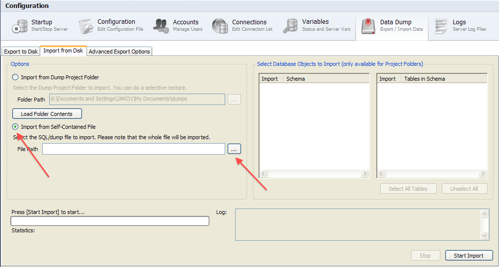
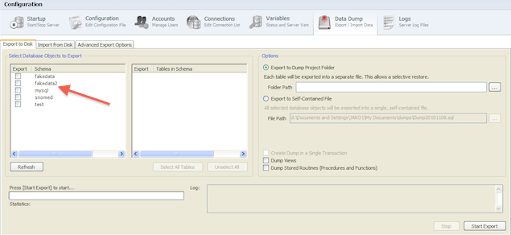

SNOMED CT, Java and MySQL are registered trademarks
This section describes the process for importing the test data for Snofyre from a SQL backup file into the local MySQL server using the MySQL workbench. The data that we will import will have been installed during the installation process into the data-import folder under the Installation Folder of Snofyre.
-
In the home screen of MySQL Workbench, double click on snofyre@localhost under the Server
Adminstration as shown below.

-
In the screen that opens, click on Data Dump tab as
shown in the screen below.

-
In the screen that appears, click on the Import from
Disk tab as shown below.

-
In the screen that appears, select the Import from Self-contained
File option as shown below. Then click the Browse button, as shown below

-
In the dialog that opens, browse to the Installation
Folder for Snofyre as shown below. Select the Snofyre-data.sql file as shown below.

-
Ensure that the file you've selected appears in the File
Path field as shown below. Then click on the Start
Import button as shown below.

-
MySQL Workbench should import the data contained in the file and display the
Import Completed message after the import has been
completed, as shown below.
You should now have the SNOMED CT data in your local MySQL Server.
-
Click on the Export to Disk tab and verify that you can
see fakedata2 listed under the Select Database
Objects to Export section as shown below.If it does not appear,
click on the Refresh button.

You should now have the test data for Snofyre in your local MySQL Server.